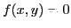

Next: Differentiation of implicit functions Up: Rules for differentiating standard Previous: Example Contents Index
When a relation between  and
and  is given by means of an equation
not solved for
is given by means of an equation
not solved for  , then
, then  is called an implicit function of
is called an implicit function of  .
For example, the equation
.
For example, the equation
It is sometimes possible to solve the equation defining an implicit
function for one of the variables and thus change it into an explicit
function. For instance, the above two implicit functions may be solved for  ,
giving
and
;
the first showing
,
giving
and
;
the first showing  as an explicit function of
as an explicit function of  , and the second as
an explicit function of
, and the second as
an explicit function of  and
and  . In a given case, however,
such a solution may be either impossible or too complicated for convenient use.
. In a given case, however,
such a solution may be either impossible or too complicated for convenient use.
The two implicit functions used in this section for illustration may be respectively denoted by  and .